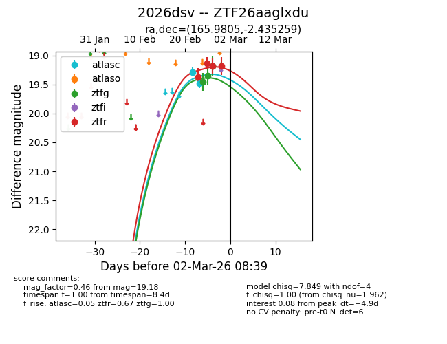
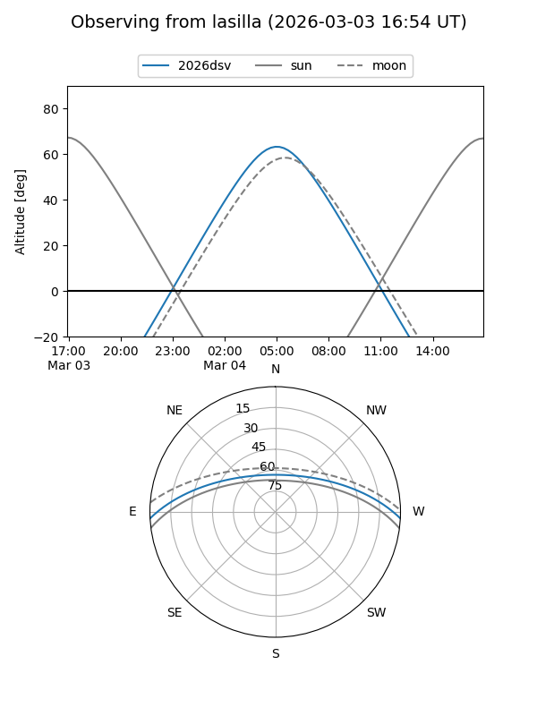
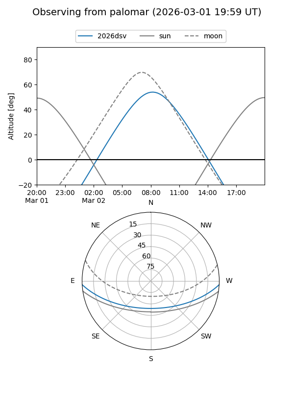
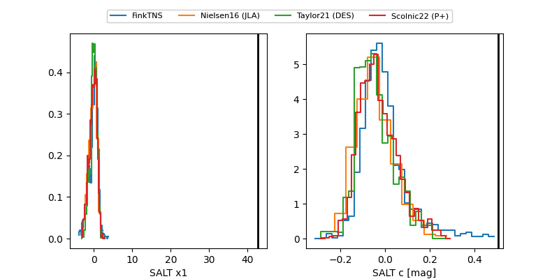

2026dsv
Target 2026dsv at 2026-03-02 08:40
Aliases and brokers:
FINK: link
Lasair: link
ALeRCE: link
TNS: link
YSE: link
alt names
ZTF26aaglxdu (ztf,fink_ztf)
2026dsv (tns,yse)
Coordinates:
equatorial (ra, dec) = 165.9805,-2.43526
equatorial (HMS+DMS) = 11:03:55.31,-02:26:06.93
galactic (l, b) = (257.4503,+50.69135)
Flags:
Photometry:
last atlasc=19.48, ztfg=19.18, ztfr=19.18
2 atlasc, 3 ztfg, 4 ztfr detections
Lightcurve

Visibility


Additional plots
